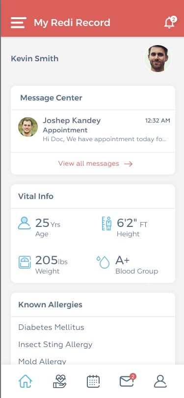
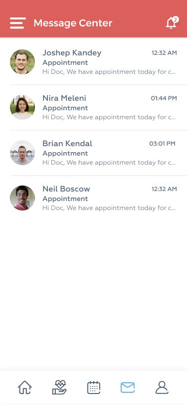

One step at a time
Account, physical information, and provider selection appear as separate screens, giving each decision a defined space.
A mobile app design bringing account setup, provider selection, health records, messaging, and consent into a consistent interface.



Mobile app design
12 curated images
Progressive onboarding
Adobe XD prototype
A mobile app design bringing account setup, provider selection, health records, messaging, and consent into a consistent interface.
Original screens captured from the linked Adobe XD prototype.
Open original prototype ↗Tap any image to explore the original in detail.
A retrospective design analysis based on the preserved screens.
Account, physical information, and provider selection appear as separate screens, giving each decision a defined space.
The record dashboard groups messages, vital information, and allergies into distinct cards instead of a single uninterrupted list.
Consent, record requests, and sharing receive their own screens and explicit continuation controls.
A newly reconstructed wireframe study showing the hierarchy and content groups visible in the finished work.
Created for this portfolio from the final designs. This is a retrospective reconstruction, not evidence of original research, testing, or wireframing.
Let’s start with one clear idea and a free design preview for your business.
Talk to Vijay on WhatsApp ↗vijay.design360@gmail.com ↗